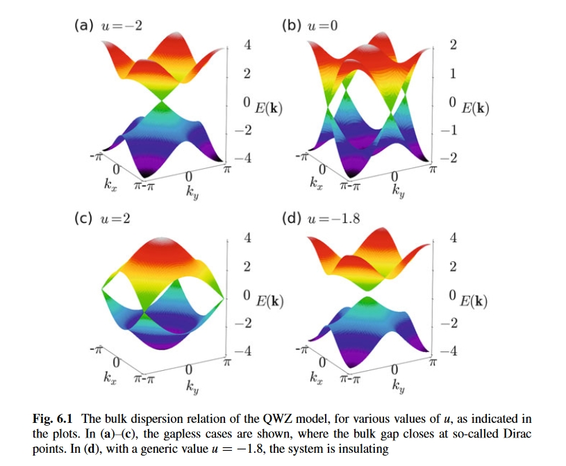
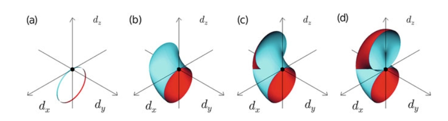
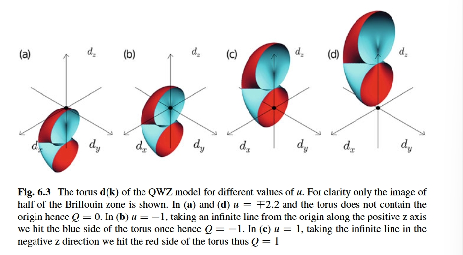
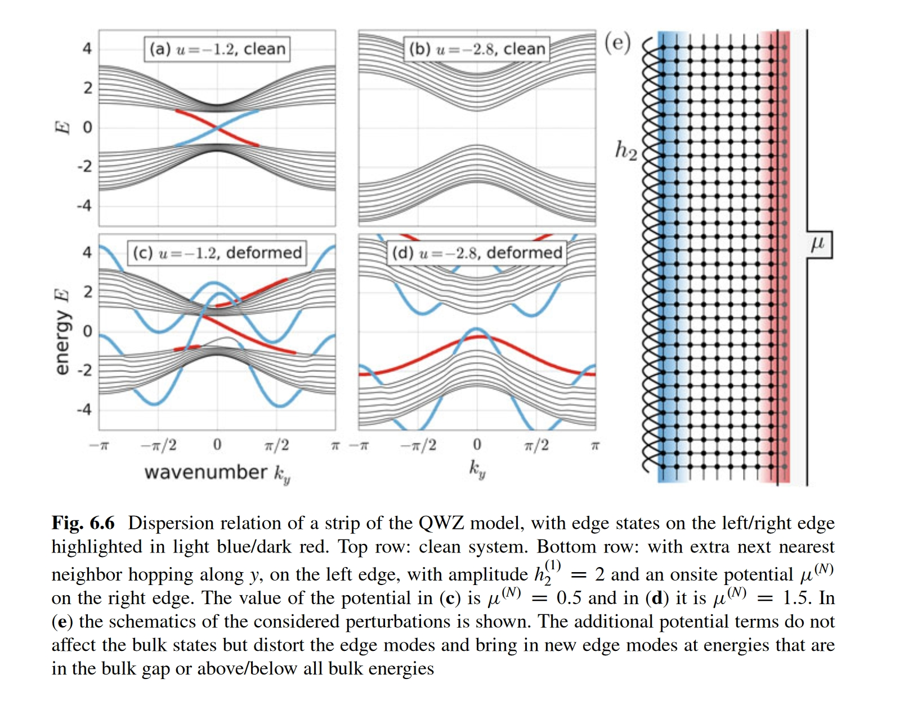

Topological-Insulator-Note-2
参考： 《A Short Course on Topological Insulators》Chapter 4 Adiabatic Charge Pumping, Rice-Mele Model
对于一维绝缘体来说，周期性且缓慢地改变系统外部参数，可以实现粒子（或者电荷）的移动。本章将会在介绍绝缘电荷pumping的时候介绍色散分支的边缘态以及体-边界对应关系。暂且将 Adiabatic Charge Pumping称为绝热电荷运输。绝热电荷运输可以帮助我们理解二维陈导体的体-边界对应。很显然这个绝热电荷运输会使得系统随时间变化，与我们前面研究的不含时哈密顿量不同。
最简单的绝热电荷运输模型是含时版本的Rice-Mele model: \[ \begin{align} H(t)=& v(t)\sum\limits_{m}^{N}(|{m,B}\rangle \langle{m,A}|+h.c.)+w(t)\sum\limits_m^{N-1}(|{m+1,A}\rangle \langle{m,B}|+h.c.)\\ &+ u(t)\sum\limits_{m}^N(|{m,A}\rangle \langle{m,A}|-|{m,B}\rangle \langle{m,B}|). \end{align} \] 我们将其跃迁振幅都设为时间依赖的周期函数。本章将会研究我们如何选取合适恰当的时间序列使得粒子沿着一维链移动。
4.1 Charge Pumping in a Control Freak Way
使得粒子在RM模型中移动的最直接的方法是让系统每时每刻都保持完全二聚化。也就是任意时刻，不是原胞内跃迁振幅\(v\)为0就是原胞之间的跃迁振幅\(w\)为0.
4.1.1 Adiabatic Shifting of Charge on a Dimer
Chapter 6 Two-Dimensional Chern Insulators: Qi-Wu-Zhang Model
保证边界存在低能态是拓扑绝缘体独一无二的物理特点。比如之前提到过的一维拓扑绝缘体——SSH模型，一段有限长的拓扑非平庸SSH模型在两个端点有零能态。体边界对应关系使我们可以用陈数来预测边界态数目的存在。
体边界对应关系的二维版本是，陈数与边界态channel的数目一致。为了证明二维的体边界对应关系，我们把其中一个波数对应到绝热电荷运输中的时间参数上。高维哈密顿量中陈数与边界态数目的联系，与地位哈密顿量中陈数与运输荷之间的联系相同。
陈导体在历史上的第一次应用是解释量子霍尔效应.本章中构建的模型用于描述所谓的反常量子霍尔(QAH)效应，叫QWZ模型。这个模型也是BHZ模型的基础，BHZ模型用于描述量子自旋(QSH)效应.因此QWZ模型也被称为half BHZ模型。
6.1 Dimensional Extension: From an Adiabatic Pump to a Chern Insulator
我们尝试构造一个二维的晶格哈密顿量，使得其bulk陈数不为0. 构造将从动量空间哈密顿量出发，位置空间的可由傅里叶变换得到。如前面所说，我们先考虑以为绝缘体的绝热电荷运输\(H(k_x.t)\)，然后我们将外部的周期性参数t解释为另外一个动量空间的变量\(k_y\)，这种方法被称为维度拓展(dimensional extension)。
6.1.1 From the Rice-Mele Model to The Qi-Wu-Zhang model
对于RM模型的绝热电荷运输，将其做如下对于关系得到QWZ模型: \[ \begin{align} \begin{cases} \bar{v}\to u\\ k\in [0,2\pi)\to k_x\in [0,2\pi)\\ t\in[0,T)\to k_y\in [0,2\pi)\\ \sigma_x,\sigma_y,\sigma_z \to \sigma_y,\sigma_z,\sigma_x \end{cases}. \end{align} \] 上式中我们将原本原胞内的跃迁振幅视作新模型的在位势，时间差对应到新模型的动量分量，同时将模型做一个旋转。则此时对应的\(d(k)\)为： \[ \begin{align} d(k_x,k_y)=\begin{pmatrix}\sin k_x\\ \sin k_y\\ u+\cos k_x+\cos k_y\end{pmatrix} \end{align} \]
6.1.2 Bulk Dispersion Relation and Chern Number
对于用泡利矩阵展开的动量哈密顿量，我们可以轻易写出其本征值: \[ \begin{align} E_{\pm}&= \pm|d(k)|\\ &= \pm\sqrt{\sin^2k_x+\sin^2k_y+(u+\cos k_x+\cos k_y)^2}. \end{align} \] u的不同取值决定了不同的能带结构，当\(u=0,\pm2\)时，都存在某个\((k_x,k_y)\)使得能带闭合：  上图给出四类不等价的能带闭合点，当\(u=-2\)给出的布里渊区中心点叫\(\Gamma\)点；当\(u=0\)时，给出两类不等价的\(X\)点（注意有两种\(X\)点)；当\(u=2\)时给出的四个点等价，称为\(M\)点。这种线性能带闭合点称为所谓的狄拉克点(Dirac point)，其附近的色散关系称为狄拉克锥(Dirac cone)
当准动量k改变的时候，\(d(k)\)划出一个参数曲面，从\(d\)对k的依赖关系可以看出，u只是使得曲面上下平移，因此我们先不考虑u。如果单看\(k_x\)，我们可以得到一个平移过的，由\(d_x,d_z\)张成的单位圆(比如说在某个特定的\(k_y\)下，有\(x_x^2+(d_z-\cos k_y)^2=1\))，改变\(k_y\)时，该单位圆在\(d_y\)方向上平移相应的距离，同时竖直方向上的原心产生的移动。
按照上面的视角，我们将\(k_y\)从\(-\pi\)变化到\(0\)：  由对称性可以得到另外一半。需要注意的是，蓝色的是曲面的外部，红色的内部，参数在改变的时候，曲面发生了内外翻转。
对于完整的参数曲面来说，显然我们无法很好地定义曲面到底包围了原点几次，因为我们整个参数曲面只是四次用圆的边界碰到了原点，我们无法区分原点到底在曲线内部还是外部。（类比SSH模型中\(v=w\)的情况）
但若是调整u值，使整个参数曲面上移一点，那我们可以笃定地说原点被曲面内侧包围，此时陈数Q=1；若使参数曲面下移一点，则可以笃定地说原点被曲面外侧包围，此时陈数Q=-1；而若是曲面上下移动过多以至于\(|u|>2\)，则我们可以肉眼看到原点在曲面外，不被曲面包围，此时Q=0,见下图示例: 
综上有: \[ \begin{align} \begin{cases} Q=1:&0<u<2\\ Q=-1:& -2<u<0\\ Q=0:& |u|>2 \end{cases} \end{align} \]
6.1.3 The Real-Space Hamiltonian
我们从动量哈密顿量得到实空间的哈密顿量: \[ \begin{align} H&= \sum\limits_{k_x}\sum\limits_{k_y}(\sin k_x \sigma_x+\sin k_y \sigma_y+(u+\cos k_x+\cos k_y)\sigma_z)|{k_x}\rangle\langle{k_x}|\otimes|{k_y}\rangle\langle{k_y}|\\ &= \sum\limits_{k_x}\sum\limits_{k_y}(\frac{e^{ik_x}-e^{-ik_x}}{2i}-i\frac{e^{ik_y}-e^{-ik_y}}{2i})|{A}\rangle \langle{B}|\otimes|k_x\rangle\langle{k_x}|\otimes|{k_y}\rangle\langle{k_y}|+h.c.\\ &+\sum\limits_{k_x}\sum\limits_{k_y}(u+\frac{e^{ik_x}+e^{-ik_x}}{2}+\frac{e^{ik_y}+e^{-ik_y}}{2})(|{A}\rangle\langle{A}|-|{B}\rangle\langle{B}|)\rangle\langle{k_x}|\otimes|{k_y}\rangle\langle{k_y}|. \end{align} \]
我们将下式带入上面 \[ \begin{align} |{k_x}\rangle&= \frac{1}{\sqrt{N}}\sum\limits_{m_x} e^{im_xk_x}|{m_x}\rangle\\ |{k_y}\rangle&= \frac{1}{\sqrt{N}}\sum\limits_{m_y} e^{im_yk_y}|{m_y}\rangle. \end{align} \] 对于第一个求和的部分有: \[ \begin{align} &\sum\limits_{k_x}\sum\limits_{k_y}(\frac{e^{ik_x}-e^{-ik_x}}{2i}-i\frac{e^{ik_y}-e^{-ik_y}}{2i})\frac{1}{N}\sum\limits_{m_x,n_x}e^{im_xk_x}e^{-in_xk_x}|{m_x}\rangle\langle{n_x}|(...)\\ &=\frac{1}{N}\sum\limits_{m_x,n_x} \sum\limits_{k_x}\frac{e^{i(m_x+1-n_x)k_x}-e^{-i(n_x+1-m_x)k_x}}{2i}|{m_x}\rangle\langle{n_x}|(\sum\limits_{k_y}...)-(*...)\\ &= \sum\limits_{m_x}\frac{|{m_x}\rangle\langle{m_x+1}|-|{m_x+1}\rangle\langle{m_x}|}{2i}\sum\limits_{k_y}\frac{1}{N}\sum\limits_{m_y,n_y}e^{im_yk_y}e^{-in_yk_y}|{m_y}\rangle\langle{n_y}|-(*...)\\ &= \sum\limits_{m_x,m_y}\frac{|{m_x,m_y}\rangle\langle{m_x+1,m_y}|-|{m_x+1,m_y}\rangle\langle{m_x,m_y}|}{2i}-(*...) \end{align} \] 在上面的运算中，我略去了\(|{A}\rangle\langle{B}|\)与复共轭\(h.c.\)，同时\(\sin k_y\)的部分被我用\((*...)\)代替，因为这实在是太长了，我只能先运算其中一部分，接下来我们计算\((*...)\)： \[ \begin{align} (*...)&= \frac{i}{N}\sum\limits_{m_x,m_y,n_y}\sum\limits_{k_y}\frac{e^{i(m_y+1-n_y)k_y}-e^{-i(n_y+1-m_y)k_y}}{2i}|{m_y}\rangle\langle{n_y}|\otimes |{m_x}\rangle\langle{m_x}|\\ &= i\sum\limits_{m_x,m_y}\frac{|{m_x,m_y}\rangle\langle{m_x,m_y+1}|-|{m_x,m_y+1}\rangle\langle{m_x,m_y}|}{2i} \end{align} \] 因此第一个求和部分为: \[ \begin{align} &\sum\limits_{m_x,m_y}\frac{|{m_x,m_y}\rangle\langle{m_x+1,m_y}|-|{m_x+1,m_y}\rangle\langle{m_x,m_y}|}{2i}|{A}\rangle\langle{B}|+h.c.\\ &-\sum\limits_{m_x,m_y}\frac{|{m_x,m_y}\rangle\langle{m_x,m_y+1}|-|{m_x,m_y+1}\rangle\langle{m_x,m_y}|}{2i}i|{A}\rangle\langle{B}|+h.c.\\ &=\sum\limits_{m_x,m_y}\frac{i}{2}|{m_x+1,m_y}\rangle\langle{m_x,m_y}|\otimes (|{A}\rangle\langle{B}|+|{B}\rangle\langle{A}|)+h.c.\\ &-\sum\limits_{m_x,m_y}\frac{i}{2}|{m_x,m_y+1}\rangle\langle{m_x,m_y}|\otimes(i |{A}\rangle\langle{B}|-i |{B}\rangle\langle{A}|)+h.c.\\ &= \sum\limits_{m_x,m_y}|{m_x+1,m_y}\rangle\langle{m_x,m_y}|\otimes i\sigma_x+h.c.\\ &+\sum\limits_{m_x,m_y}|{m_x,m_y+1}\rangle\langle{m_x,m_y}|\otimes i\sigma_y+h.c. \end{align} \] 上面的计算中，第一个等号是先将复共轭的完整形式写出，然后发现\(|{A}\rangle\langle{B}|\)前面的内容是厄米的（就是在复共轭下保持不变），同时\(-\frac{|{m_x+1,m_y}\rangle\langle{m_x,m_y}|}{2i}\)的复共轭就是\(\frac{|{m_x,m_y}\rangle\langle{m_x+1,m_y}|}{2i}\),因此可以写成一部分加上其复共轭的形式。如果实在觉得有点混乱，不妨把复共轭的内容全部展开，这样你会发现一切都变得清楚。对于\(\sigma_y\)部分的推导也类似，只不过我们把虚数\(i\)放在\(|{A}\rangle\langle{B}|\)的前面，这样能够保持前面内容厄米。剩下的计算略去，最后得到实空间哈密顿量为: \[ \begin{align} H=&\sum\limits_{m_x}^{N_x-1}\sum\limits_{m_y=1}^{N_y}(|{m_x+1,m_y}\rangle\langle{m_x,m_y}|\otimes \frac{\sigma_z+i\sigma_x}{2}+h.c.)\\ &+\sum\limits_{m_x=1}^{N_x}\sum\limits_{m_y=1}^{N_y-1}(|{m_x,m_y+1}\rangle\langle{m_x,m_y}|\otimes \frac{\sigma_z+i\sigma_y}{2}+h.c.)\\ &+u\sum\limits_{m_x,m_y}|{m_x,jm_y}\rangle\langle{m_x,m_y}|\otimes \sigma_z \end{align} \]
这个哈密顿量描述了一个最近邻的二维晶格，且x方向与y方向并不相同。
6.2 Edge States
如果我们对y方向施加周期性边界边界条件，对x方向施加开边界条件，如此一来y方向具有平移不变性，我们可以对其施加傅里叶变换，得到对应的\(k_y\)波数。此时哈密顿量写为： \[ \begin{align} H(k_y)&= \sum\limits_{m_x}^{N_x-1}(|{m_x+1}\rangle\langle{m_x}|\otimes \frac{\sigma_z+i\sigma_x}{2}+h.c.)\\ &+|{m_x}\rangle\langle{m_x}|\otimes(\cos k_x\sigma_z+\sin k_y \sigma_y+u\sigma_z). \end{align} \] 我们可以在x的边界得到边界态，此时所有态在y方向以及x方向都是非局域的，除了x的边界态，依旧以指数衰减的方式局域在边界。
我们画出波数\(k_y\)的能带，可以发现它长得和RM模型的绝热电荷输运模型类似。边缘态的出现使得QWZ模型并不是纯粹的绝缘体，在材料的边缘存在边缘态可以在导体中输运电子。
6.2.1 Edge States and Edge Perturbation
RM模型的绝热电荷运输是具有鲁棒性的，二维QWZ模型的边缘态也是具有鲁棒性。这里的鲁棒性是指我们在系统的边缘进行哈密顿量的修改（扰动），这并不会改变系统的拓扑性质。比如说我们在x边界加上y方向的次近邻相互作用，同时加强边界上的在位势，扰动的哈密顿量项如下: \[ \begin{align} H'(k_y)=\sum\limits_{m_x\in\{1,N\}}|{m_x}\rangle\langle{m_x}|\otimes \mathbb{I}^2(\mu^{(m_x)}+h_2^{(m_x)}\cos 2k_y). \end{align} \] 得到的能带图如下:  如图所示，上两张小图是没有加上扰动项的，\(u=-1.2\)的陈数是-1，另外一个是0；下面两张小图是加上扰动项的，其中具体的扰动参数设置见图下方小字。可以看出edge态的数目是发生了变化，但并不是成对出现的，所以实质上陈数并没有发生改变，也就是说扰动不改变系统的拓扑性质。